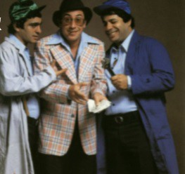
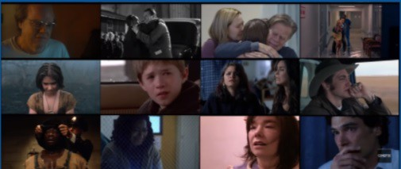
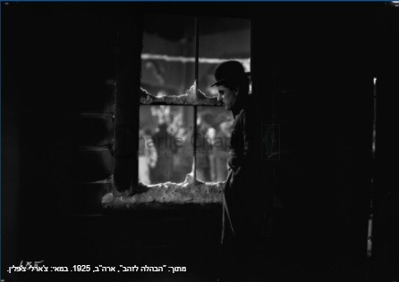
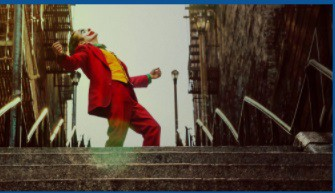
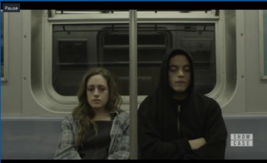

? אז מה היה לנו שם

בשיעור הראשון למדנו שתמונה מספרת סיפור
בשיעור השני למדנו שהתמונה צריכה לעורר תגובה רגשית
בשיעור הזה נלמד מה עלינו לעשות בכדי שנוכל לייצר בעצמנו תמונות כאלו
דיסני מצאו את הפתרון הכי טוב
כשצריך היה לצלם עצבות, קבעו יום צילום עם עצבות, ביקשו ממנה לעמוד כאן, לעמוד שם וצילמו
כך גם לגבי שמחה ושאר הרגשות שמופיעות בסרט הכל בראש
לכולנו יש קולות פנימיים — "הקול בראש"
מתוך: "הקול בראש", ארה"ב, 2015. במאי: פיט דוקטר.
▶ צפו בסרטון ב-YouTube? אך איך אנחנו יכולים לצלם מושגים מופשטים שכאלו
📷 צילום מקרוב
אחת הדרכים המוכרות והנפוצות בקולנוע הוא הצילום מקרוב.
הדמות שלך עצובה, תצלם מקרוב שנראה אותה עצובה
הדמות שלך שמחה, אין בעיה, תצלם מקרוב בכדי שנראה

… אבל
הַפְרֵיְם הבא צולם מרחוק, האם כאן לא עוברת תחושה של עצבות או בדידות?

💡 מסקנה
שאיפתנו לא להראות דמות חווה רגש כלשהו, אלא לנסות ולייצר את הרגש עצמו בתכנון ועיצוב התמונה.

אם כך, שאיפתנו היא לנסות לתרגם רגשות, שהן דבר מופשט, לפְרֵיְם חזותי (תמונה קולנועית). כאשר נצליח לעשות זאת, הצופה לא רק יראה דמות עצובה/שמחה/כועסת וכד' על המסך, אלא גם ירגיש זאת.
